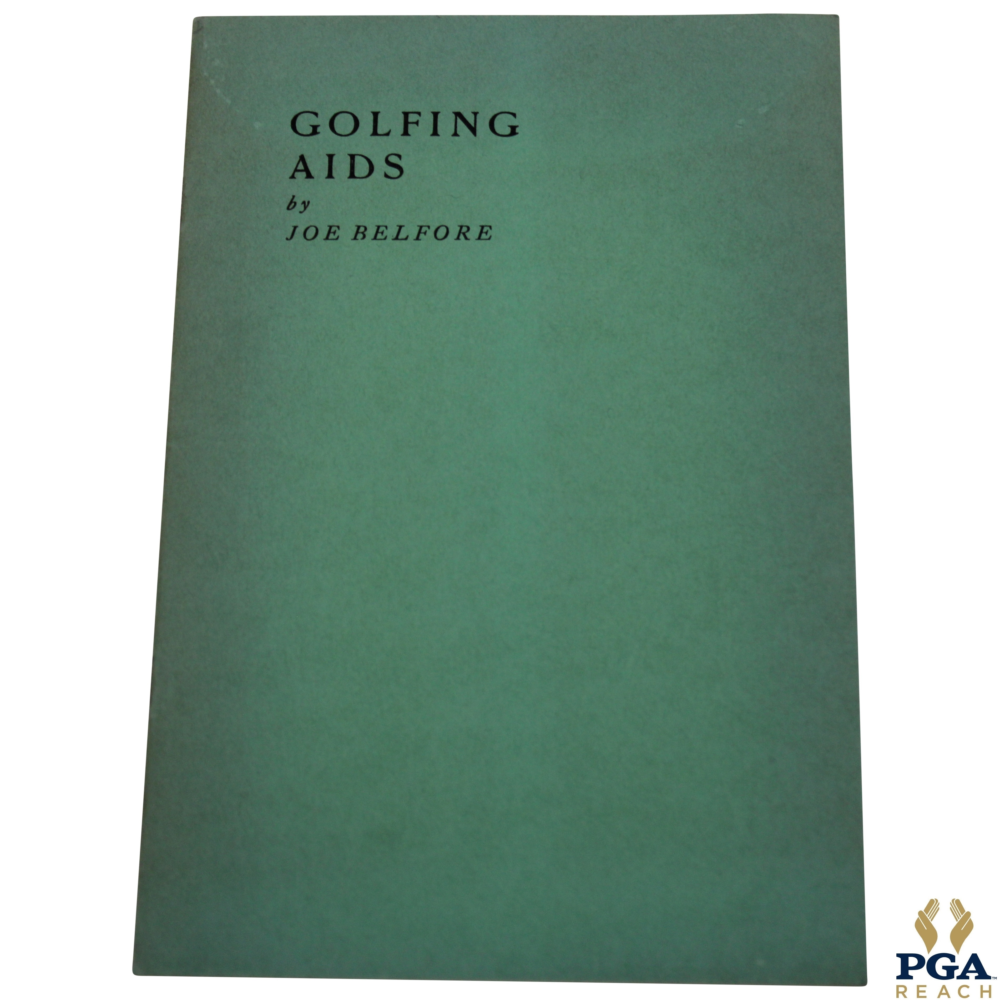
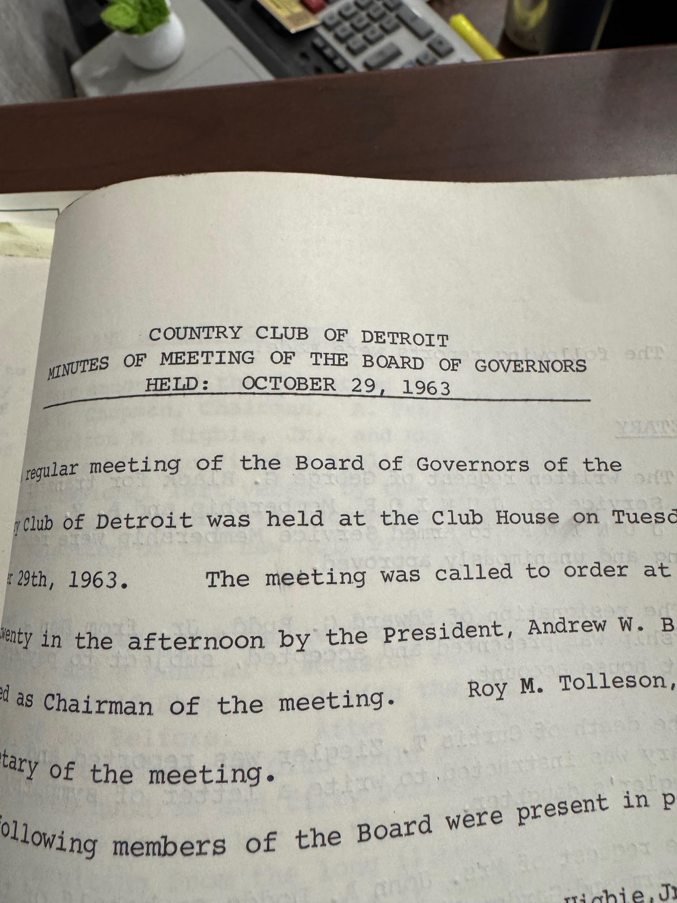
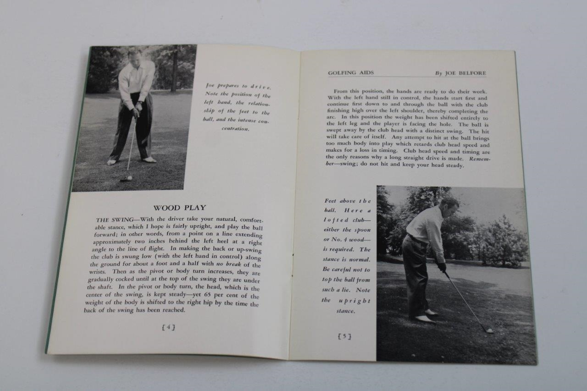
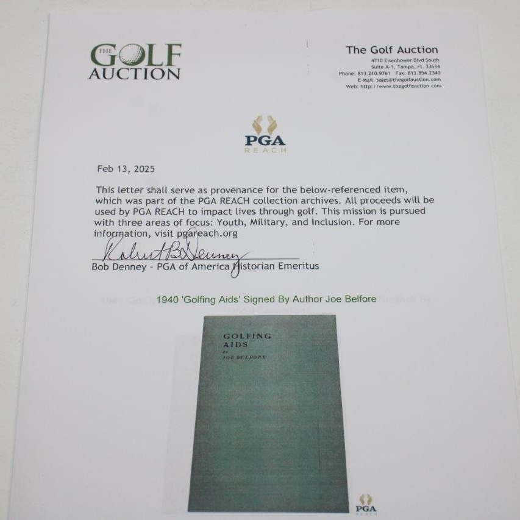

The Golfing Brothers
Sons of Immigrants, Pioneers of a Sport
Three of the four sons of Leonardantonio and Maria Belfiore — Italian immigrants from San Bartolomeo in Galdo — became professional golfers. This was extraordinary for the era.
Before the Belfiore brothers, professional golfers and club makers in America were almost exclusively foreign-born, usually Scottish. The country clubs that employed them were bastions of old-money privilege. Italian immigrants worked the kitchens, the laundry, the grounds. They didn't play the game, let alone teach it.
Sammy's obituary in The Standard-Star described him as "the first of the native born trio to blossom forth" — among the first native-born Americans to enter professional golf. Three boys from 46 Mechanic Street, sons of a painter and a woman from the Apennine mountains, broke into one of the most exclusive professions in American sport.
The fourth brother, Michael — Seb's great-grandfather — was described in the obituary as "their non-golfing brother." He stayed in New Rochelle, worked as a house painter, and raised a family. He was the oldest, the only one born in Italy, and the only one who didn't pick up a club.

The three golfing Belfiore brothers together on a golf course, circa 1940s. Believed to be Sammy, Frank, and Joseph.
The Three Brothers
Sammy Belfiore — "The First to Blossom Forth"
Sammy Belfiore was born December 25, 1899, in New Rochelle. He was described in his obituary as "the first of the native born trio to blossom forth" — among the first native-born Americans of Italian descent to enter professional golf.
He served as golf professional at Ridgeview Country Club in Westchester for many years. In the 1930s he won a PGA Tour event — confirmed by his PGA of America player profile, which lists one official PGA Tour win. He was also the personal golf instructor for Clinton Russell, a prominent blind golfer from New Rochelle whose story was covered by Time magazine.
In 1948, after 36 years of golf, he became head professional at Seabreeze Golf and Tennis Club in Daytona Beach, Florida. He wrote about the experience in Golfdom magazine (February 1948), describing the club's revival after a five-year wartime shutdown. His brother Frank joined him at Seabreeze, running the pro shop.
Sammy married Virginia Hupp, whose family was connected to the Hupp Motor Car Company of Detroit. He changed the spelling of his surname to "Belfore." He died in Daytona Beach around 1971–1972, age 72, after a long illness. He was survived by son Samuel Alexander Belfore Jr. (Ormond Beach, FL), daughter Patricia Hupp Fleming (Birmingham, Michigan), and three grandchildren.
His obituary in The Standard-Star is the single most important document in this entire research — it named every sibling, confirmed the complete family structure, and described the remarkable golfing story.
View: Golfdom Magazine Article (Feb 1948) • Golfdom "Making the Swing" Column
Frank Belfiore — The Seabreeze Pro Shop
Frank Belfiore (Francesco) followed his brother to Florida. He took over the golf shop at Seabreeze Golf and Tennis Club in Daytona Beach. A photograph in Sammy's February 1948 Golfdom magazine article shows both brothers together behind the counter of the pro shop. The two brothers worked together at the same Florida club for two decades.
Frank died April 21, 1968, in Daytona Beach — three or four years before Sammy. His parents are confirmed as Antonio Belfiore and Maria D. Circelli via Ancestry indexed records.
Joseph "Joe" Belfore — Country Club of Detroit, Michigan PGA President
Joe Belfore was far more than just a club pro. He became head golf professional at the Country Club of Detroit in Grosse Pointe Farms, Michigan — one of the most prestigious private clubs in America. According to the Michigan PGA's Centennial history, Belfore was "a highly regarded player and teacher" who served as President of the Michigan PGA Section from 1959 to 1960. He won the Michigan PGA Professional Championship twice, in 1933 and 1937. The Michigan PGA noted that "he also had the business skills to serve in acting management roles at the club when needed."
In 1927, Joe competed in the Metropolitan Open alongside legends Walter Hagen, Gene Sarazen, and Bill Mehlhorn — as reported by The New York Times. In 1940, he authored a book titled "Golfing Aids", which he personally signed — copies have appeared at golf memorabilia auctions. He also appeared in Golfdom magazine (January 1934).

"Golfing Aids" by Joe Belfore — the green cover of Joe's 1940 instructional book, from the PGA REACH collection archives.

Title page: "Golfing Aids by Joe Belfore, Professional — Country Club of Detroit. Price Twenty-Five Cents."

Signed by the author: "Joe Belfore, Detroit, Michigan, April 4, 1940." The only known photograph of Joe Belfore, alongside the opening chapter on "Grip and Stance."
Joe died in 1963 after a long illness. The Country Club of Detroit's Board of Governors met on October 29, 1963, to discuss replacing him and settling his affairs. The minutes reveal how deeply respected he was: the board voted to pay $750 to his wife ("Mrs. Belfore") as a gift to help settle obligations from his long illness. They allowed Mrs. Belfore to continue running the Golf Shop through the Christmas season until January 2, 1964. Joe's assistant professional, Danny Bianco, was paid $1,000 for services during the past season.
The board minutes also reveal that Joe had two sons: David Belfore and Joseph F. Belfore Jr. (nicknamed "Jeffery"). The board granted both sons personal golfing privileges for two years starting November 1, 1963 — they could sign chits and use the Men's Grill and Locker Room, though the privileges didn't extend to their families. The middle initial "F." in Joseph Jr.'s name may stand for "Frank" after Joe's brother, following Italian naming customs.
Critical note: This Joseph (the golfer, Michael's brother) is NOT Seb's grandfather. Seb's grandfather Joseph was Michael's son — almost certainly named after this uncle following the classic Italian tradition of naming children after uncles and grandparents.

Country Club of Detroit — Minutes of Meeting of the Board of Governors, held October 29, 1963. The meeting that settled Joe Belfore's affairs after his death.

Golf, Grounds and Greens Committee section — details the $750 gift to Mrs. Belfore, Danny Bianco's compensation, and golfing privileges for sons David and Joseph F. Jr. ("Jeffery").
The Fourth Brother
Michael Kirtus Belfiore — Seb's great-grandfather — was described in Sammy's obituary as "their non-golfing brother." He was the oldest of the four, born December 15, 1883 or 1885, in Italy, and the only one who arrived as a child rather than being born in New Rochelle.
While his three younger brothers were playing golf at country clubs from New Rochelle to Daytona Beach to Grosse Pointe, Michael stayed in New Rochelle and worked as a house painter. He was married twice — his first wife (name unknown) gave him a daughter, Dorothy. He then married Frances Towey, an Irish-American woman, with whom he had two sons: Edward and Joseph (Seb's grandfather).
He died on January 16, 1952, at New Rochelle Hospital. His death certificate was later unearthed during the family's genealogical research, confirming his parents as Anthony Belfiore and Maria Circelli.

Michael Kirtus Belfiore's WWI Draft Registration Card, 1918 — "their non-golfing brother." Lists his daughter Dorothy at 216 Hamilton Street, Bridgeport, CT.

1940 Census — Michael listed as "Painter, Building," living with Frances, Edward, and Joseph in New Rochelle.
Clinton Russell — The Blind Golfer
One of the most remarkable chapters in Sammy Belfiore's career was his role as personal golf instructor to Clinton Russell, a prominent blind golfer from New Rochelle.
Russell was born October 8, 1895, the son of Newell F. Russell, co-founder of the Bridgeman-Russell dairy company. He lost his sight and took up golf as a blind player, with Sammy as his guide and instructor. His caddy was Jimmy Koehler.
In 1938, Russell played a famous exhibition match at Wykagyl Country Club in New Rochelle against Charley Oxenham, the English blind golf champion. The match attracted significant press coverage and was noted in Time magazine. In 1948, Russell beat Oxenham again at Rackham Golf Course in Detroit. His rivalry with Charles Boswell, the legendary blind golfer from Birmingham, Alabama, was a fixture of blind golf competition for decades.
Russell won the Ben Hogan Award in 1957, one of golf's most prestigious honors for overcoming physical adversity. Sammy's connection to Russell demonstrates the reach and reputation he had built in the golf world — far beyond the immigrant community in which he grew up.
Clinton Russell — The Blind Golfer (David Ouse)
Full biography covering the Wykagyl match, Time magazine, the Ben Hogan Award, and Sammy's coaching role.
The Photo
A family photograph shows three men standing on what appears to be a golf course or club grounds, circa 1940s. They are believed to be Sammy, Frank, and Joseph Belfiore — the three golfing brothers, together.
The three golfing Belfiore brothers on a golf course, circa 1940s. Believed to be Sammy, Frank, and Joseph.
The Obituary
Sammy Belfore's obituary in The Standard-Star is the single most important document in this research. It named every sibling, confirmed the complete family structure, and described the remarkable golfing story.

"Sammy Belfore, Last Of 3 Golfing Brothers" — The Standard-Star obituary, with a photo of Sammy as he appeared in 1948 when he became golf pro at Seabreeze in Daytona, Florida.
Seabreeze & the Golfdom Article
In February 1948, Golfdom magazine — the leading trade publication for golf professionals — published an article by Sammy Belfore about his new position at Seabreeze Golf and Tennis Club in Daytona Beach. The article, announced in Herb Graffis's "Making the Swing" gossip column in the January 1948 issue, described the club's revival after a five-year wartime shutdown.
Sammy detailed the $4,600 reseeding effort using Toro equipment to restore the course. The article included photographs of the Seabreeze clubhouse and a shot of Sammy and Frank together in the pro shop — the only known photograph of the two brothers working together. The membership structure and the club's transformation from wartime dormancy to a thriving Florida golf destination were documented in detail.
The Golfdom article is significant because it provides the only first-person account from any of the Belfiore brothers — written in Sammy's own words about his professional life in golf.
Golfdom Magazine — February 1948
"Winter Pro Job Is Preview of Season to Come" by Sammy Belfore. Photos of the Seabreeze clubhouse and the brothers in the pro shop.
Golfdom "Making the Swing" Column — January 1948
Herb Graffis's gossip column announcing Sammy's appointment at Seabreeze.
Timeline of the Golfing Brothers
Growing Up in New Rochelle
The brothers grow up near Wykagyl Country Club. Their proximity to one of New Rochelle's most prestigious clubs likely sparked their interest in golf — unusual for sons of Italian immigrants.
Sammy Becomes Pro at Ridgeview Country Club
Sammy Belfiore begins his professional career at Ridgeview Country Club in Westchester — "the first of the native born trio to blossom forth." At a time when golf pros were almost exclusively Scottish, a son of Italian immigrants enters the profession.
Sammy Wins a PGA Tour Event
Sammy wins a PGA Tour event, confirmed by his PGA of America player profile listing one official PGA Tour win. A son of Italian immigrants competing and winning at the highest level of American golf.
Clinton Russell — The Blind Golfer
Sammy becomes personal golf instructor to Clinton Russell, a prominent blind golfer from New Rochelle. Russell's caddy was Jimmy Koehler. The partnership would last for years.
The Exhibition Match at Wykagyl
Clinton Russell plays an exhibition match at Wykagyl Country Club against Charley Oxenham, the English blind golf champion. The match attracts press coverage including Time magazine. Sammy guides Russell through the match at the very club where his career began.
Joe Competes in the Metropolitan Open
Joe Belfore competes in the Metropolitan Open alongside legends Walter Hagen, Gene Sarazen, and Bill Mehlhorn. The New York Times reports on the field. A son of Italian immigrants sharing a tee sheet with the greatest golfers of the era.
Joe Becomes Head Pro at the Country Club of Detroit
Joe Belfore becomes head golf professional and Golf Shop operator at the Country Club of Detroit in Grosse Pointe Farms, Michigan — one of the most prestigious private clubs in America, serving the auto industry elite "for many years."
Joe Wins the Michigan PGA Championship — Twice
Joe wins the Michigan PGA Professional Championship in 1933 and again in 1937 — the state's most prestigious title for golf professionals. The Michigan PGA later described him as "a highly regarded player and teacher."
Joe Featured in Golfdom Magazine
Joe Belfore appears in the January 1934 issue of Golfdom, the leading trade publication for golf professionals.
Joe Publishes "Golfing Aids"
Joe authors a book titled Golfing Aids in 1940, which he personally signs. Copies have appeared at golf memorabilia auctions. A son of Italian immigrants writing golf instruction for an American audience.

Interior pages of "Golfing Aids" — Joe demonstrating the wood play swing with detailed instruction on grip, stance, and follow-through.

PGA REACH provenance letter (February 2025) — authenticating the signed copy of "Golfing Aids" from The Golf Auction, part of the PGA REACH collection archives.
Joe Elected President of the Michigan PGA
Joe Belfore is elected President of the Michigan PGA Section, serving from 1959 to 1960. The Michigan PGA's Centennial history notes that "he also had the business skills to serve in acting management roles at the club when needed."
Westchester Open Championship
Sammy competes in the Westchester Open at Ridgeview Country Club — his home course. He remains a prominent figure in Westchester golf.
Golfdom "Making the Swing" Column
Herb Graffis's gossip column in Golfdom magazine announces Sammy's appointment as the new pro at Seabreeze Golf and Tennis Club in Daytona Beach.
Sammy to Seabreeze — The Golfdom Article
After 36 years of golf, Sammy becomes head professional at Seabreeze Golf and Tennis Club in Daytona Beach. He writes about it in Golfdom magazine, describing the $4,600 reseeding effort and the club's revival after five years of wartime shutdown.
Russell Beats Oxenham Again
Clinton Russell defeats Charley Oxenham again at Rackham Golf Course in Detroit. A decade after their first match, the blind golfer Sammy coached continues to dominate.
Frank Takes Over the Pro Shop
Frank Belfiore follows his brother to Daytona Beach and takes over the pro shop at Seabreeze. A photograph in the Golfdom article shows the two brothers behind the counter. Two brothers, working together at the same Florida course.
Joe Dies — Country Club of Detroit Board Meets
Joe Belfore dies after a long illness. The Country Club of Detroit's Board of Governors meets October 29, 1963, to settle his affairs, pay $750 to his widow, and grant his sons David and Joseph Jr. ("Jeffery") two years of golfing privileges. His assistant Danny Bianco is paid $1,000 for services during the past season.
Frank Dies in Daytona Beach
Frank Belfiore dies in Daytona Beach, Florida.
Sammy Dies — The Last Golfing Brother
Sammy Belfore dies in Daytona Beach, Florida, age 72, after a long illness. His obituary in The Standard-Star preserves the complete family story. He is survived by son Samuel Alexander Belfore Jr. (Ormond Beach) and daughter Patricia Hupp Fleming (Birmingham, Michigan).
Sammy's Family
Sammy married Virginia Hupp, whose surname connects her to the Hupp Motor Car Company of Detroit — the manufacturer of the Hupmobile automobile (1909–1940). The company was founded by Bobby Hupp in 1908. The Grosse Pointe golf connection (where brother Joseph was pro) and the Hupp family's Detroit roots suggest the brothers' Michigan connections may have led to the match.
Sammy and Virginia had two children:
Samuel Alexander Belfore Jr.
Sammy's son. His full name was Samuel Alexander Belfore Jr. He lived in Ormond Beach, Florida (adjacent to Daytona Beach). He married Julia Clair Belfore. He died approximately 2024–2025 in Ormond Beach. He carried the changed spelling "Belfore."
Patricia Hupp Fleming
Patricia Hupp Fleming (née Belfore) was born June 11, 1933, and died January 1, 2022, age 88, in Birmingham, Michigan. Her middle name "Hupp" confirms the family connection to the Hupp Motor Car Company. She married John J. Fleming and had four children: Lisa Fleming, Chris Fleming, John Fleming Jr., and Geoff Fleming. She was buried at Cedar Hill Cemetery in Birmingham, Michigan.
Joe's Family — Country Club of Detroit
The Country Club of Detroit Board of Governors minutes from October 29, 1963 — discovered in the club's archives — are the standout document for Joe's branch of the family. They reveal that Joe had a wife ("Mrs. Belfore", first name still unknown) and two sons: David Belfore and Joseph F. Belfore Jr. (nicknamed "Jeffery").
The board's actions after Joe's death speak to how deeply respected he was at the club. They voted to pay $750 to Mrs. Belfore to help settle obligations from Joe's long illness. They allowed her to continue running the Golf Shop through the Christmas season until January 2, 1964. And they granted both sons personal golfing privileges for two years starting November 1, 1963 — including the right to sign chits and use the Men's Grill and Locker Room.
Joe's assistant professional was Danny Bianco, whom the club paid $1,000 for services during the past golfing season, plus $400/month for January and February 1964, plus $200 for the first half of March — indicating the club was in transition mode without a head pro for several months.

"Golfing Aids" by Joe Belfore — the 1940 instructional book that cemented his legacy as both a player and teacher at the Country Club of Detroit.
Country Club of Detroit Board of Governors Minutes, October 29, 1963 — the document that revealed Joe's sons David and Joseph F. "Jeffery" Belfore Jr., and the club's generous treatment of his family after his death.
David Belfore
Son of Joe Belfore. Granted personal golfing privileges at the Country Club of Detroit for two years following his father's death in 1963.
Joseph F. "Jeffery" Belfore Jr.
Son of Joe Belfore, nicknamed "Jeffery." The middle initial "F." may stand for "Frank" after Joe's brother, following Italian naming customs. Granted personal golfing privileges at the Country Club of Detroit for two years following his father's death.